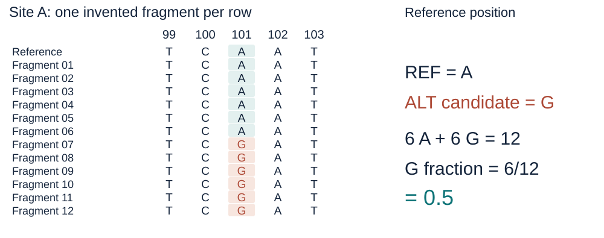
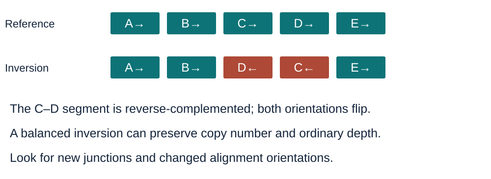
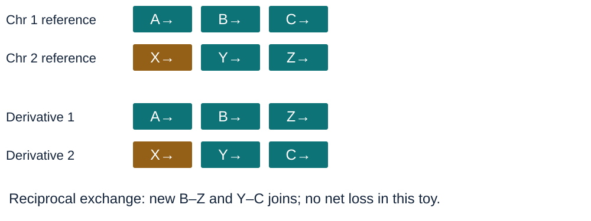

Which differences from the reference
are supported by the reads?
Week 05 · Synthetic examples throughout
Week 05 · Variants
Which differences from the reference
are supported by the reads?
Week 05 · Synthetic examples throughout
Week 05 · Variants
A mismatch is an observation. What could have produced it?
A sample difference, a sequencing error, or an incorrect alignment.
Week 05 · Variants
| Format | What is stored |
|---|---|
| FASTQ | Read sequence and per-base quality; no placement |
| SAM | Readable text records of reads and alignments |
| BAM | Compressed binary representation of SAM data |
Coordinate-sorted BAM + an index → retrieve reads overlapping a region.
Does converting SAM to BAM call variants?
No. The encoding changes; variant calling is a separate analysis.
Week 05 · Variants
| RNAME | POS | MAPQ | CIGAR | SEQ | QUAL |
|---|---|---|---|---|---|
| toy | 99 | 60 | 5M | TCGAT | DDDDD |
Selected fields from a SAM text view of one forward-strand record.
Position 99 100 101 102 103 Reference T C A A T Read T C G A T
Which letter enters the pileup at position 101?
G, with base Q35. MAPQ 60 concerns the placement; 5M permits mismatches.
Week 05 · Variants
| Change | Reference | Sample |
|---|---|---|
| SNV | ACGT | ATGT |
| Small deletion | ACGT | AGT |
| Larger rearrangement | A → B → C → D | A → B → D |
Letters in the last row stand for long sequence blocks.
Week 05 · Variants
| Diploid genotype | Copies at this site | Description |
|---|---|---|
| 0/0 | A + A | Both reference |
| 0/1 | A + G | One of each |
| 1/1 | G + G | Both alternate |
Here REF=A and the first ALT=G.
Week 05 · Variants
A reference allele is the allele in the selected reference sequence.
It need not be the common allele, the ancestral allele, or the allele with no biological effect.
What must accompany “A→G at position 101”?
Reference identity, chromosome/contig, and coordinate convention.
Week 05 · Variants
Check reads and mappings → infer alleles and genotypes → filter and annotate.
Week 05 · Evidence

Week 05 · Evidence
6 G / (6 A + 6 G) = 0.5
Does 0.5 by itself establish genotype 0/1?
No. Inspect quality, mapping, independence, and sample assumptions.
Week 05 · Evidence
How uncertain is the reported letter?
Q20 corresponds to an estimated base-error probability of 0.01.
How uncertain is this placement?
A clear G can still be aligned to the wrong repeated region.
Week 05 · Evidence
Predict which G observations survive, then change one threshold.
| Observations | Base Q | Mapping Q | Keep? |
|---|---|---|---|
| 8 A | 35 | 60 | Predict |
| 4 G | 10 | 60 | Predict |
| 2 G | 35 | 5 | Predict |
Teaching rule: base Q ≥ 20 and mapping Q ≥ 30.
Raw: 6/14 ≈ 0.429. Retained: 0/8 = 0.
Week 05 · Evidence
| Site | A reads | G reads | G forward / reverse |
|---|---|---|---|
| A | 6 | 6 | 3 / 3 |
| C | 6 | 6 | 6 / 0 |
What would you inspect next at C?
Independent fragments on the other strand and the local alignment context.
Week 05 · Evidence
One original fragment → PCR copies → many read records
Would 20 duplicate records provide 20 independent observations?
No. Count and model the evidence with its molecular dependence in mind.
Week 05 · Genotypes
| Genotype | Expected G fraction in our toy |
|---|---|
| 0/0 | e = 0.01 |
| 0/1 | 0.5 |
| 1/1 | 1 − e = 0.99 |
Binary A/G errors, independent observations, equal chromosome sampling.
Week 05 · Genotypes
Predict the best-fitting genotype. Compare 1 A + 1 G with 6 A + 6 G.
Bars: likelihood / best likelihood, not posterior probabilities. Independent binary A↔G errors; correct mappings; no priors.
L = (1 − p)6 × p6
| Genotype | p = P(G) | log₁₀ likelihood |
|---|---|---|
| 0/0 | 0.01 | −12.026 |
| 0/1 | 0.50 | −3.612 |
| 1/1 | 0.99 | −12.026 |
0/1 fits best under the stated assumptions; this is not a guarantee.
Week 05 · Genotypes
| Retained observations | Conclusion in the toy |
|---|---|
| 1 A + 1 G | 0/1 fits best, but there is little evidence |
| 6 A + 6 G | Same best genotype, stronger likelihood contrast |
| No observations | All candidates have equal likelihood |
Week 05 · Genotypes
Reference CAAAG Alignment 1 C-AAG Alignment 2 CA-AG Alignment 3 CAA-G
Each aligned sample spells CAAG after removing the gap.
The sample sequence is clear; the gap position inside the repeat is ambiguous.
Week 05 · Genotypes
A new join may explain several mismatches and gaps together.
Week 05 · Structure
Choose a change. Predict whether total copy number must change.

Week 05 · Structure
| Ideal total copies | Relative to diploid baseline |
|---|---|
| 1 copy | 1/2 = 0.5 |
| 2 copies | 2/2 = 1.0 |
| 3 copies | 3/2 = 1.5 |
Assume comparable sampling, mappability, and a homogeneous sample.
Week 05 · Structure

Week 05 · Structure

Week 05 · Structure
Use depth first. Then reveal the junction evidence and revise your explanation.
Junction evidence is hidden. What could explain this depth?

Week 05 · Structure

Week 05 · Structure
Reference: left flank | 400-base region | right flank Sample: left flank | right flank Split read: [20 bases][20 bases]
What does the read contribute beyond a depth ratio?
Sequence evidence linking the two flanks, with breakpoint uncertainty.
Week 05 · Structure
Read 1 left flank ───── Read 2 ───── new join ───── Read 3 ───── right flank Contig left flank ── new join ── right flank
Align the assembled contig back to the reference.
Week 05 · Structure
| Evidence | Question |
|---|---|
| Read depth | Is the amount of mapped sequence different? |
| Paired ends | Is fragment geometry unusual on the reference? |
| Split reads | Which flanks meet within a read? |
| Assembly / long reads | Can a longer sequence span the proposed arrangement? |
Week 05 · Structure
One copy is absent.
Depth ratio ≈ 0.5.
Both copies exist, but many reads fail to map.
Depth ratio ≈ 0.5.
What observation would help choose between them?
Credible, independent junction-spanning sequences and a mapping-context check.
Week 05 · Records
CHROM POS REF ALT QUAL FILTER FORMAT SAMPLE toy 101 A G . PASS GT:AD:DP 0/1:6,6:12
Selected columns shown; the full notebook file includes headers, ID, and INFO.
Week 05 · Records
| Field | Example | Meaning |
|---|---|---|
| GT | 0/1 | Inferred allele pair, unphased |
| AD | 6,6 | Reference then alternate allele depths |
| DP | 12 | Sample depth at the position |
The observed read fraction here is 6 / (6 + 6) = 0.5.
Week 05 · Records
Read the allele replacement. Convert the record’s POS to a Python index.
Enter the index, then check your answer.
VCF: POS=501 REF=AT ALT=A Position: 501 502 Reference: ... A T ... Sample: ... A - ...
Which base is deleted, and where does Python index it?
T at 1-based position 502 is deleted; its Python index is 501.
Week 05 · Records
| Label | What to ask |
|---|---|
| QUAL | How confident is the site-level assertion? |
| GQ | How confident is this sample genotype? |
| PASS | Which filters were applied and passed? |
| . | Is this value missing or filtering not applied? |
Week 05 · Records
An indel can affect a coding frame only in the relevant coding transcript.
Week 05 · Evidence
| Site | After default quality filters | Other observation |
|---|---|---|
| A | 6 A, 6 G | G supported on both strands |
| B | 8 A, 0 G | All G failed a quality threshold |
| C | 6 A, 6 G | G only on the forward strand |
State an observation and a next check for each site.
Equal fractions can conceal different evidence; filtering changes what was observed.
Week 05 · Evidence
Depth ratio 0.5 in [400,800).
Independent pairs have reference spans near 700 bp.
Split reads join the 400 and 800 boundaries.
The usual fragment span is about 300 bp. What is the shared explanation?
A candidate 400-base heterozygous deletion; check mapping and junction support.
Week 05 · Evidence
Week 05 · Evidence
Count alleles → change quality filters → compare strands.
Plot regional depth → interpret two VCF records.
Short runnable cells, small edits, and written explanations.
The genotype-likelihood extension is optional.